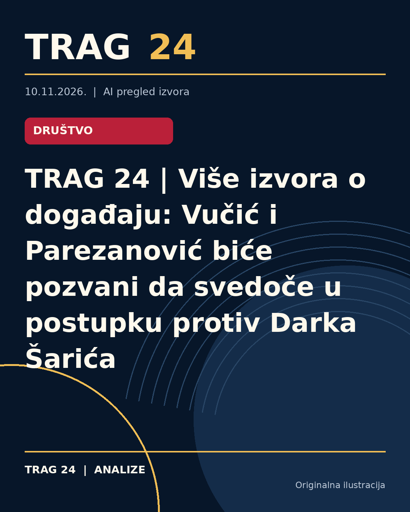

TRAG 24 | Više izvora o događaju: Vučić i Parezanović biće pozvani da svedoče u postupku protiv Darka Šarića

TRAG 24 | PREGLED VIŠE IZVORA
Tema: Vučić i Parezanović biće pozvani da svedoče u postupku protiv Darka Šarića
Ovaj pregled povezuje izveštavanje više medija o istoj temi. Navodi nisu nezavisno potvrđeni od strane TRAG 24.
ŠTA OBJAVLJUJU MEDIJI
N1 objavljuje: Vučić i Marko Parezanović biće pozvani da svedoče u postupku protiv Šarića za pranje para
U tekstu ovog medija navodi se: Bivši predsednik Srbije Aleksandar Vučić i Marko Parezanović iz Bezbednosno-informativne agencije biće pozvani kao svedoci u postupku u kom se Darku Šariću sudi za pranje novac. To odluku je saopštio sudija koji predsedava Sudskim većem u tom postupku Vladan Ivanković, javlja reporterka Insajdera. Kako javlja reporterka Insajdera , svi okrivljeni u ovom postupku su napustili sudnicu, a ostali su njihovi advokati.
Nova.rs objavljuje: Aleksandar Vučić i Marko Parezanović biće pozvani da svedoče na suđenju narko-bosu Darku Šariću za pranje para
U tekstu ovog medija navodi se: Bivši predsednik Srbije Aleksandar Vučić i Marko Parezanović iz Bezbednosno-informativne agencije biće pozvani kao svedoci u postupku u kom se Darku Šariću sudi za pranje novac. To odluku upravo je saopštio sudija koji predsedava sudskim većem u tom postupku Vladan Ivanković, javlja reporterka Insajdera. Kako javlja reporterka Insajdera, svi okrivljeni u ovom postupku su napustili sudnicu, a ostali su njihovi advokati.
Danas objavljuje: Vučić i Parezanović biće pozvani da svedoče u postupku protiv Darka Šarića
U tekstu ovog medija navodi se: Bivši predsednik Srbije Aleksandar Vučić i Marko Parezanović iz Bezbednosno-informativne agencije biće pozvani kao svedoci u postupku u kom se Darku Šariću sudi za pranje novac. To odluku upravo je saopštio sudija koji predsedava Sudskim većem u tom postupku Vladan Ivanković, javlja reporterka Insajdera . Darku Šariću i drugim optuženima sudi se pred Posebnim odeljenjem Višeg suda u Beogradu zbog sumnje da su „oprali“ najmanje 20 miliona evra stečenih trgovinom narkoticima. Šarić je prvostepeno bio osuđen na devet godina zatvora u ovom postupku, ali je presuda ukinuta i naloženo je ponovno suđenje.
ŠTA JE POTVRĐENO
Potvrđeno je da navedeni mediji objavljuju informacije o ovoj temi. To samo po sebi ne potvrđuje tačnost svih njihovih navoda.
ŠTA OSTАJE OTVORENO
Za konačne zaključke potrebno je proveriti primarne dokumente, zvanična saopštenja i eventualne razlike među izvorima.
Izvori
- https://n1info.rs/vesti/vucic-marko-parezanovic-svedoce-protiv-sarica-pranje-para/
- https://nova.rs/vesti/hronika/aleksandar-vucic-i-marko-parezanovic-bice-pozvani-na-sud-zbog-darka-sarica/
- https://www.danas.rs/vesti/drustvo/vucic-parezanovic-svedoci-darko-saric/
Ova analiza je pripremljena uz pomoć veštačke inteligencije na osnovu javno dostupnih izvora. Navodi izvora nisu nužno nezavisno potvrđeni.